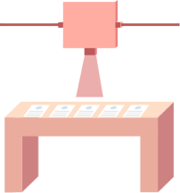

Bạn không cần phải là kỹ sư để đặt câu hỏi về việc công nghệ đang ảnh hưởng đến cuộc sống của chúng ta như thế nào. Mục tiêu không phải là để mọi người đều trở thành nhà khoa học dữ liệu hay kỹ sư học máy, mặc dù lĩnh vực này chắc chắn cần nhiều sự đa dạng hơn, mà là để có đủ nhận thức để tham gia vào cuộc thảo luận và đặt ra những câu hỏi quan trọng.
Học máy (Machine learning - ML), là một ứng dụng của trí tuệ nhân tạo (AI) liên quan đến việc dạy máy tính cách đưa ra quyết định bằng cách học từ lượng dữ liệu khổng lồ. AI có thể là một công cụ mạnh mẽ giúp đưa ra quyết định nhanh chóng, nhưng việc ra quyết định "tự động" của nó không có nghĩa là nó luôn chính xác, khách quan hoặc công bằng.
Mặc dù Survival of the Best Fit minh họa cách mà việc ra quyết định tự động có thể bị thiên vị, nhưng các công cụ dựa trên Mô hình Ngôn ngữ Lớn (LLM) hiện đại có thể làm được nhiều điều hơn là chỉ phân loại ứng viên là tốt hay xấu. Chúng có thể tóm tắt kinh nghiệm làm việc của bạn thành một sơ yếu lý lịch, tạo ra các mô tả công việc chân thực, sàng lọc sơ yếu lý lịch và thậm chí tiến hành các cuộc phỏng vấn ban đầu. Những công cụ này cũng dựa trên cùng một khuôn khổ, nơi các thuật toán được đào tạo trên các tập dữ liệu khổng lồ.
Khi xây dựng các hệ thống học máy, chúng ta nên hỏi: những quyết định này dựa trên số liệu nào, và chúng ta có thể buộc ai chịu trách nhiệm? Với học máy, điều đó trở nên phức tạp, bởi vì sau khi chương trình được đào tạo trên lượng dữ liệu lịch sử khổng lồ, việc tìm ra lý do tại sao một quyết định cụ thể được đưa ra không còn đơn giản nữa. Đó là cái mà người ta gọi là vấn đề Hộp Đen (Black Box problem).
Công nghệ nên giúp chúng ta tiến về phía trước, chứ không phải lặp lại những sai lầm của quá khứ. Ví dụ, nếu dữ liệu chúng ta sử dụng đại diện cho một lịch sử khi chỉ những người thuộc một chủng tộc, giới tính hoặc tầng lớp nhất định mới được hệ thống ưu ái, thì chúng ta đang dạy phần mềm của mình điều gì?
Đây là một vấn đề phức tạp với một giải pháp phức tạp. Và chỉ riêng công nghệ thì không đủ.
Tùy thuộc vào dữ liệu được đưa vào phần mềm học máy, điều đó có thể có nghĩa là các quyết định mà nó tạo ra có thể tuân theo những định kiến tiêu cực, được mô phỏng theo những bất công tồn tại từ lâu, hoặc loại trừ các nhóm người nhất định. Chúng tôi muốn đảm bảo rằng công nghệ hoạt động cho tất cả mọi người và không lặp lại những bất công và bất bình đẳng lịch sử theo những cách có hệ thống. Công bằng là chủ quan và thiên vị là phức tạp. Chúng tôi không mong đợi các kỹ sư phần mềm sẽ giải quyết được tất cả - đó là lý do tại sao chúng tôi nghĩ bạn nên là một phần của cuộc trò chuyện. Xây dựng phần mềm không chỉ là một thách thức kỹ thuật thuần túy khi nó liên quan đến nhiều ý nghĩa xã hội, chính trị và kinh tế. Dù liên quan đến thiên vị thuật toán hay những cách khác mà công nghệ đang ảnh hưởng đến cuộc sống của chúng ta, chúng ta cần có khả năng đặt câu hỏi và yêu cầu các nhà phát triển chịu trách nhiệm.
Đôi khi chúng ta phải hỏi: làm thế nào để phần mềm này không áp bức hoặc loại trừ? Việc sử dụng công nghệ này có phù hợp không? Nếu một giải pháp học máy không cho phép chúng ta nghi ngờ kết quả của nó, liệu các chính phủ và tập đoàn có nên sử dụng việc ra quyết định tự động để tự giải phóng bản thân khỏi trách nhiệm không?
Chúng ta không có một giải pháp tắt nào để "khắc phục" thiên vị thuật toán, nhưng chúng ta có rất nhiều người tuyệt vời đang nghiên cứu về nó. Chúng tôi không muốn phát minh lại bánh xe, mà muốn khuyến khích bạn ủng hộ và mở rộng những nỗ lực đang diễn ra. Việc xây dựng công nghệ có đạo đức, công bằng không bắt đầu hay dừng lại ở thiên vị thuật toán, đó là lý do tại sao chúng tôi hy vọng công chúng sẽ được thông báo tốt hơn về cách công nghệ ảnh hưởng đến cuộc sống của chúng ta nói chung.
Chúng ta cần sự hợp tác giữa các cá nhân và tổ chức trong nhiều lĩnh vực khác nhau để tiến những bước dài trong việc xây dựng công nghệ công bằng hơn và để bắt những người phát triển nó phải chịu trách nhiệm. Đây là lý do tại sao chúng tôi muốn các vấn đề về đạo đức công nghệ có thể tiếp cận được với những người có thể chưa từng tham gia lớp học khoa học máy tính trước đây, nhưng vẫn có rất nhiều điều để đóng góp cho cuộc trò chuyện.
Có nhiều góc độ để tiếp cận công nghệ công bằng, bao gồm nhận thức và vận động công chúng tốt hơn, buộc các công ty công nghệ chịu trách nhiệm, thu hút nhiều tiếng nói đa dạng hơn và phát triển các chương trình giáo dục khoa học máy tính có ý thức xã hội hơn.
Nếu bạn muốn tìm hiểu thêm về thiên vị thuật toán hoặc tác động của công nghệ đối với xã hội của chúng ta, hãy xem danh sách đọc của chúng tôi bên dưới. Sau đó, chúng tôi hy vọng bạn sẽ đặt câu hỏi, nói lên ý kiến của mình và ủng hộ lời kêu gọi về một công nghệ mang lại lợi ích cho xã hội của chúng ta.
Đừng lo, chúng tôi đã chuẩn bị sẵn... Đây là những bài đọc yêu thích của chúng tôi về chủ đề thiên vị thuật toán và công nghệ có đạo đức.